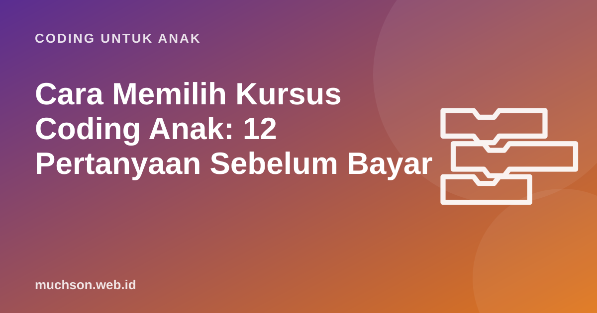

Beranda › Artikel › Coding untuk Anak
Coding untuk AnakCara Memilih Kursus Coding Anak: 12 Pertanyaan Sebelum Bayar
Kursus coding anak kini banyak sekali, dengan harga dan janji yang sangat beragam. Sebagai orang yang membuat kursus coding anak sendiri, saya ingin memberi panduan yang jujur: pertanyaan yang sebaiknya Anda ajukan ke penyelenggara mana pun, termasuk ke saya, sebelum membayar.

Mulai dari tujuan, bukan dari brosur
Sebelum membandingkan kursus, tentukan dulu apa yang Anda harapkan. Tujuan yang berbeda membutuhkan kursus yang berbeda:
| Tujuan orang tua | Yang perlu dicari |
|---|---|
| Anak mengenal coding dan senang | Kelas percobaan, proyek kreatif, suasana santai |
| Anak berpikir lebih logis | Kurikulum berurutan, latihan logika, pemeriksaan hasil |
| Anak siap lomba atau olimpiade | Latihan soal algoritma, pembina berpengalaman lomba |
| Mendukung mapel Koding dan AI di sekolah | Materi yang sejalan dengan konsep berpikir komputasional |
12 pertanyaan untuk penyelenggara
Tentang kurikulum
- Boleh saya lihat daftar seluruh pelajarannya? Kursus yang serius bisa menunjukkan urutan materi dari awal sampai akhir.
- Konsep apa yang dikuasai anak setelah 3 bulan? Jawaban yang baik menyebut konsep (loop, kondisi, variabel), bukan hanya "membuat game".
- Bagaimana kalau anak lebih cepat atau lebih lambat? Apakah ada tugas tambahan atau pengulangan?
- Alat apa yang dipakai, dan apakah hasilnya bisa dibawa pulang? Proyek yang terkunci di platform tertentu tidak bisa dilanjutkan bila berhenti berlangganan.
Tentang pengajaran
- Berapa jumlah anak per guru? Untuk anak SD, kelompok kecil (sekitar 4-8 anak) memungkinkan guru memperhatikan setiap anak.
- Apakah proyek anak diperiksa dan diberi komentar? Umpan balik spesifik adalah bagian terpenting dari belajar.
- Bagaimana guru menangani anak yang macet? Jawaban terbaik: memberi petunjuk bertahap, bukan langsung mengerjakan.
- Apa latar belakang pengajarnya? Pahami pengalaman mengajar anak, bukan hanya pengalaman pemrograman.
Tentang biaya dan komitmen
- Berapa biaya per jam belajar sebenarnya? Hitung total biaya dibagi jam tatap muka atau jam belajar.
- Apakah ada biaya tambahan? Pendaftaran, modul, perangkat, sertifikat.
- Apakah diperpanjang otomatis, dan bagaimana cara berhenti? Pastikan Anda bisa berhenti tanpa denda yang tidak masuk akal.
- Apakah ada kelas percobaan? Lihat langsung sebelum berkomitmen.
Tanda bahaya: janji yang terlalu indah
Cara menilai kelas percobaan
Saat mengikuti kelas atau pelajaran percobaan, perhatikan anak, bukan hanya materi:
- Siapa yang memegang mouse? Anak harus mencoba sendiri, bukan menonton guru.
- Apakah anak bisa menjelaskan yang ia buat? Tanyakan setelah kelas: "Tadi kamu membuat apa? Bagaimana caranya?"
- Bagaimana suasana saat anak salah? Guru yang baik membuat bug terasa normal.
- Apakah anak ingin kembali? Antusiasme setelah kelas pertama adalah indikator penting.
Belajar mandiri, kelas dengan guru, atau gabungan?
| Pilihan | Kelebihan | Cocok untuk |
|---|---|---|
| Mandiri dengan platform terstruktur | Fleksibel, biaya rendah | Anak mandiri, orang tua bisa menemani |
| Kelas kelompok dengan guru | Umpan balik, teman belajar, jadwal teratur | Anak yang butuh struktur dan motivasi sosial |
| Les privat | Perhatian penuh, tempo sesuai anak | Kebutuhan khusus atau target tertentu |
| Ekskul sekolah | Mudah diakses, bersama teman | Pengenalan awal, biaya terjangkau |
Transparansi dari saya
Karena saya membuat PixelKode, saya mencoba menjawab pertanyaan di atas secara terbuka: daftar 32 pelajarannya bisa dilihat di halaman depan; dua pelajaran pertama bisa dicoba tanpa mendaftar; proyek Studio bisa diunduh sebagai berkas Scratch .sb3; paket kelas bersama guru dibatasi maksimal 6 anak; dan paket berbayar tidak diperpanjang otomatis. Gunakan daftar periksa yang sama untuk membandingkannya dengan pilihan lain. Keputusan terbaik adalah yang cocok untuk anak Anda.
Tanya jawab
Berapa umur yang tepat untuk kursus coding?
Kursus coding online atau offline lebih baik?
Berapa lama sampai terlihat hasilnya?
Apa yang ditanyakan saat kelas percobaan?
Sumber dan bacaan lanjut
- Scherer dkk. (2019). Meta-analisis manfaat belajar pemrograman (efek bergantung cara mengajar)
- Scratch untuk orang tua
- Antara: Koding dan AI masuk Kurikulum 2025/2026